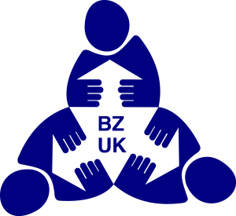
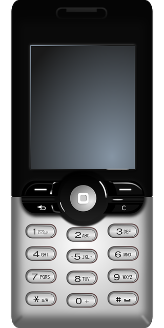

Kommunikation ist ein Grundbedürfnis.
Das heißt:
Aber:
Diese Menschen können nicht sagen was sie brauchen.
Diese Menschen können nicht sagen was sie wollen.
Vielleicht können Sie deshalb nicht selbst entscheiden.
Und andere Menschen bestimmen für sie.
Deshalb ärgern sie sich vielleicht.
Oder sie sind traurig.
Das ist nicht gut.
Diesen Menschen hilft Unterstützte Kommunikation.
Zum Beispiel hilft ein Computer.
Mit dem Computer kann man schreiben.
Der Computer liest das dann vor.
Es gibt noch viele andere Hilfen.
Dazu sagt man: Unterstützte Kommunikation.
Das Beratungs-Zentrum für Unterstützte Kommunikation
ist ein Büro in Freiburg.
Dort arbeiten Fach-Leute für Unterstützte Kommunikation.
Das bedeutet: Sie kennen sich aus.
Sie beraten Menschen mit Problemen beim Sprechen.
Und überlegen:
Die Menschen im Beratungs-Zentrum arbeiten nicht für eine Firma.
Sie müssen keine Sachen von einer Firma verkaufen.
Wichtig ist nur:
Welche Hilfe ist passend?
Deshalb machen die Menschen im Beratungs-Zentrum eine gute Arbeit.
Menschen, die nicht sprechen können.
Und Menschen, die wenig sprechen können.
Und Menschen, die undeutlich sprechen.
Vielleicht haben diese Menschen eine Behinderung.
Oder sie haben eine Krankheit.
Oder sie hatten einen Unfall.
Diese Menschen sind alle anders.
Sie alle bekommen Hilfe im Beratungs-Zentrum.
Manche Menschen können nicht sprechen.
Manche Menschen versteht man schlecht.
Sie bekommen Hilfe.
Vom Beratungs-Zentrum für Unterstützte Kommunikation

Das Beratungs-Zentrum für Unterstützte Kommunikation ist ein Büro.
Menschen beraten Sie.
Und helfen Ihnen.
Damit andere Sie verstehen.
Sie wollen mehr über die Hilfe wissen?
Oder Sie brauchen Hilfe?

Sie rufen uns an.
Telefon: 07 61 48 99 4170

Sie schreiben eine E-Mail.
E-Mail: info@bzuk-freiburg.de